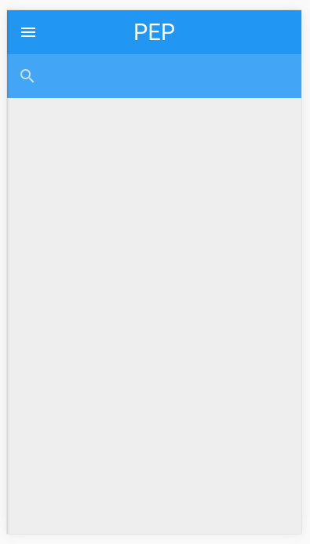
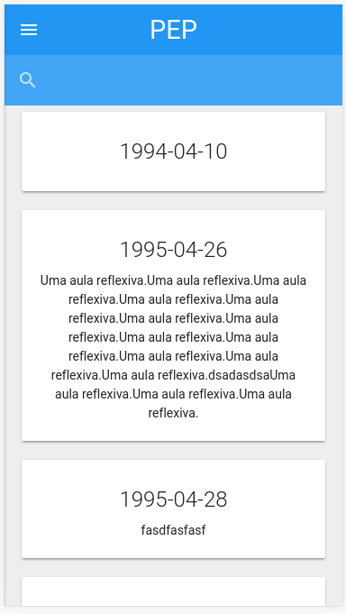
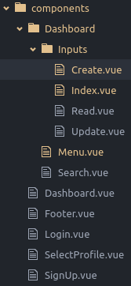
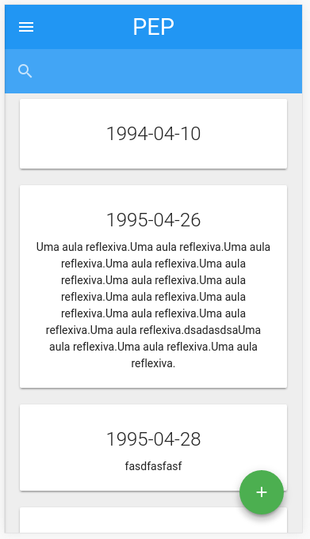
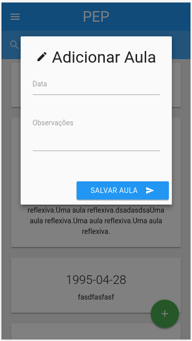

Após um hiato de 18 dias, estou dando continuidade a nossa série de posts sobre o Vue 2.
Caso você queira acompanhar os posts anteriores:
Pré-Requisitos
- Vue
- Vue-resource
- Vue-router (opcional, mas útil caso você queira páginas separadas para cada ação)
Nosso projeto
Atualmente, o projeto encontra-se assim:

Vamos começar pelo Index (Listagem de Registros).
<template>
<div class="dashboard-inputs">
</div> <!-- .dashboard-inputs -->
</template>
<script>
export default {
name: 'DashboardInputsIndex'
}
</script>
Index
Primeiro, precisamos recuperar os nossos registros através de uma requisição XHR.
Conseguimos fazer requisições facilmente com o vue-resource.
Um exemplo para esta nossa requisição:
this.$http.get('http://localhost:3000/lessons.json').then((response) => {
console.log('Dados aqui:')
console.log(response.data)
})
Para quem está acostumado com o Angular 1, a sintaxe é bem semelhante.
Este é um exemplo simples de requisição GET com o vue-resource.
Porém, vamos trabalhar com outra funcionalidade deste componente, para agilizar nosso processo de desenvolver um CRUD.
Para isto, vamos usar o método this.$resource.
Usando $resource
Um exemplo:
let lessons = this.$resource('http://localhost:3000/lessons{/id}.json')
lessons.get({}).then((response) => {
console.log(response)
})
Observação: {/id} significa que podemos passar um parâmetro ID, mas este parâmetro é opcional, por isto está entre chaves {}.
Aplicando $resource na Index
export default {
name: 'DashboardInputsIndex',
data () {
return {
resource: this.$resource('http://localhost:3000/lessons{/id}.json'),
lessons: []
}
},
methods: {
initialize () {
this.resource.get({}).then((response) => {
this.lessons = response.data
})
}
},
created () {
this.initialize()
}
}
Vamos pontuar cada atributo do componente.
name
É o nome do nosso componente.
data
Este atributo é nossa camada de dados do componente. Caso você queira manipular dados dinâmicos, eles precisam ser inicializados aqui.
No nosso caso, inicializamos 2 variáveis:
resource: Irá armazenar nosso objeto $resource
lessons: Irá armazenar nossas futuras aulas.
Todas as variáveis atribuídas ao data estarão disponíveis no resto do componente dentro do this.
No nosso caso, podemos usar:
this.resource; // para nosso $resource
this.lessons; // para nossas aulas
methods
Esta é fácil. São os métodos que estarão disponíveis no nosso componente.
Toda e qualquer função que você queira usar, deverá ser incluída aqui.
No nosso caso, criamos uma chamada initialize, que será usada quando o nosso componente for construído/inicializado.
Nosso método initialize usa o $resource para efetuar a requisição XHR e atualiza os nossos dados.
created
Este é um callback que o Vue disponibiliza. A função que for atribuída a este callback será rodada toda vez que nosso componente for chamado.
No nosso caso, aproveitamos este callback para chamar o nosso método this.initialize().
Sendo assim, toda vez que nosso componente Index for carregado, ele fará a requisição XHR.
Lindo, não?!

Exibindo dados na view
Explicado os atributos do componente, vamos exibir as informações retornadas pela requisição na nossa view.
A view ficará assim:
<template>
<div class="dashboard-inputs">
<div class="container">
<div class="row">
<div class="col s12" v-for="lesson in lessons">
<div class="card center">
<div class="card-content">
<span class="card-title">{{lesson.class_date}}</span>
<p>{{lesson.observation}}</p>
</div> <!-- .card-content -->
</div> <!-- .card -->
</div> <!-- .col -->
</div> <!-- .row -->
</div> <!-- .container -->
</div> <!-- .dashboard-inputs -->
</template>

Nossa Index está finalizada por agora.
Vamos para a próxima etapa…
Create
Precisamos permitir que nossos usuários criem novos registros, certo? Certo.
Para isto, vamos usar outro componente. Vamos chamá-lo de Create.vue.
Por enquanto, ele só vai ter um botão de adicionar que em breve acionará uma modal.
<template>
<div class="inputs-create">
<div class="fixed-action-btn">
<a class="btn-floating btn-large z-depth-4 green"><i class="material-icons">add</i></a>
</div> <!-- .fixed-action-btn -->
</div> <!-- .inputs-create -->
</template>
<script>
export default {
name: 'Inputs-Create'
}
</script>
Observação: Está é a minha árvore atual, caso você esteja curioso sobre.

Importando o Create no Index
Graças ao Vue, podemos utilizar componentes dentro de outros componentes.
Isto permite uma herança de pai x filho muito interessante.
Através desta herança, os filhos podem herdar props (propriedades) e emitir eventos para os pais.

Como a documentação do Vue sugere: Props down, events up.
Para os mais novatos, é aqui que o bicho pega conforme sua aplicação cresce. O nome que se dá para este “compartilhamento de dados” é gerenciamento de estados (ou State Management). Uma má implementação aqui e sua aplicação pode tornar-se lixo facilmente no futuro.
Apenas imagine uma grande aplicação em que diversos componentes se comuniquem sem necessariamente conter uma herança.
Para quem já ouviu falar, costumamos resolver este problema com uma pattern chamada Flux.
O vue contém sua própria implementação desta pattern chamada vuex. No próximo post falo mais sobre este assunto.
Voltando ao nosso título, vamos importar o create no index. No nosso Index.vue, precisaremos fazer esta importação:
import InputsCreate from './Create'
Agora precisamos indicar ao nosso Index para consumir este componente:
export default {
// ocultei o código para uma melhor leitura
...,
components: {
'Inputs-Create': InputsCreate
}
}
Agora podemos usar dentro do nosso Componente pai o nosso filho quantas vezes quisermos, da seguinte maneira:
<Inputs-Create></Input-Create>
No meu caso eu usei assim:
<template>
<div class="dashboard-inputs">
<div class="container">
<div class="row">
<div class="col s12" v-for="lesson in lessons">
<div class="card center z-depth-1">
<div class="card-content">
<span class="card-title">{{lesson.class_date}}</span>
<p>{{lesson.observation}}</p>
</div> <!-- .card-content -->
</div> <!-- .card -->
</div> <!-- .col -->
</div> <!-- .row -->
</div> <!-- .container -->
<!-- Aqui a mágica acontece -->
<Inputs-Create></Inputs-Create>
</div> <!-- .dashboard-inputs -->
</template>
O que me proporcionou a seguinte renderização:

Agora que temos o Create bem isolado do Index, vamos fazer a modal funcionar.
Nesta situação, você pode resolver da maneira que lhe achar mais conveniente.
Neste exemplo em específico, eu utilizarei o jQuery com o Materialize, mas eu não recomendo a ninguém usar jQuery dentro do Vue. Tente usar plugins mais agnósticos de tecnologias possíveis.
Eu só estou fazendo as coisas desta forma pois neste projeto quero usar o Materialize e nenhuma implementação do mesmo com o Vue me agradou, então tentei deixar as coisas mais roots possíveis.
Meu template com o modal funcionando abaixo:
<template>
<div class="inputs-create">
<div class="fixed-action-btn">
<a href="#modal1" class="btn-floating btn-large z-depth-4 green"><i class="material-icons">add</i></a>
</div> <!-- .fixed-action-btn -->
<div id="modal1" class="modal">
<div class="modal-content">
<h4 class="center"><i class="material-icons">edit</i> Adicionar Aula</h4>
<div class="input-field">
<input type="text" id="date" v-model="lesson.class_date">
<label for="date">Data</label>
</div> <!-- .input-field -->
<div class="input-field">
<textarea id="observation" class="materialize-textarea" v-model="lesson.observation"></textarea>
<label for="email">Observações</label>
</div> <!-- .input-field -->
</div> <!-- .modal-content -->
<div class="modal-footer">
<a href="#!" class="modal-action modal-close btn blue"><i class="material-icons right">send</i> Salvar Aula</a>
</div> <!-- .modal-footer -->
</div> <!-- .modal -->
</div> <!-- .inputs-create -->
</template>
<script>
export default {
name: 'Inputs-Create',
data () {
return {
lesson: {
class_date: null,
observation: null
}
}
},
created () {
window.jQuery(document).ready(() => {
window.jQuery('.modal').modal()
})
}
}
</script>

Agora precisamos fazer este formulário funcionar.
Fazendo o formulário funcionar

Primeiro, precisamos indicar ao nosso botão de Salvar que ele deve chamar um método através do evento de clique.
Para isto, vamos mudar a sintaxe do botão:
<!-- Antes -->
<a href="#!" class="modal-action modal-close btn blue"><i class="material-icons right">send</i> Salvar Aula</a>
<!-- Depois -->
<a href="javascript:void(0);" @click="handleSubmit(lesson)" class="modal-action btn blue"><i class="material-icons right">send</i> Salvar Aula</a>
Usamos a propriedade @click para isto, passando o método handleSubmit(lesson).
Vamos criar este método agora:
export default {
name: 'Inputs-Create',
// resto do código ocultado
...,
methods: {
handleSubmit (lesson) {
let message = ''
// usamos o resource do Index para salvar uma nova aula
// ela retornará uma Promise, que iremos tratar com o .then()
this.$parent.resource.save({}, lesson).then((result) => {
// em caso de sucesso, o primeiro parâmetro do .then() é usado
// como expliquei anteriormente,
// estou usando um plugin de jQuery para o modal.
// preciso fechá-lo então:
//
// fecha a modal
window.jQuery('.modal').modal('close')
// precisamos avisar o usuário que mudanças ocorreram
// notifica o usuário
message = 'Aula adicionada com sucesso!'
window.Materialize.toast(message)
}, () => {
// aqui é o fallback caso a requisição tenha algum problema
// notifica o usuário (em caso de erro)
message = 'Erro ao adicionar aula'
window.Materialize.toast(message)
})
}
}
}
Pronto! O nosso Create está concluído.
Só que tem 1 problema: O Index não sabe que o seu filho, Create, fez algo.
O filho, Create, precisa avisar seu pai, o Index, que ele fez alguma coisa.
Faremos este aviso através dos Eventos.
 Cuidado com o Callback Hell!
Cuidado com o Callback Hell!
Caso uma nova aula seja adicionada com sucesso, precisamos emitir um evento indicando mudanças, que chamarei de created.
Para emitir este evento, o código necessário é:
this.$emit('created')
Para nosso componente pai escutar este evento, podemos fazer de 2 maneiras:
A maneira ideal
No seu componente pai, onde chamamos o filho, adicionamos um novo atributo:
<Inputs-Create v-on:created="initialize"></Inputs-Create>
A maneira feia
Caso você queira detectar dentro da execução do componente:
this.$on('created', () => {
this.initialize()
})
Pronto! Created de fato finalizado.
Agora falta Delete e Update.
Delete
Vamos começar pelo Delete pela simplicidade.
Precisamos de um botão para remover os itens:
<div class="card-action">
<button @click="handleDelete(lesson)" class="btn-flat red-text">
<i class="material-icons">delete</i>
</button>
</div> <!-- .card-action -->
Este botão está chamando o método handleDelete(lesson).
handleDelete (lesson) {
this.resource.delete({id: lesson.id}).then((response) => {
this.$emit('deleted')
})
}
Este método está emitindo um evento deleted. Vamos escutá-lo quando o componente é criado?
created () {
this.initialize()
this.$on('deleted', () => {
this.eventDeleted()
})
}
Dentro da nossa escuta, estamos acionando outro método eventDeleted(). Vamos criá-lo?
eventDeleted () {
// reiniciamos o componente
this.initialize()
// notifica o usuário
let message = 'Aula removida!'
window.Materialize.toast(message)
}
Pronto! Delete concluído, faltando apenas o Update.

Update
O Update pode ser implementado em N maneiras. Faremos da maneira mais repetitiva possível, criando outro componente com um template próprio, mas talvez em uma situação da vida real seja interessante você isolar o formulário em um componente só e reaproveitá-lo dentro do Create e Update.
Em termos de template, é idêntico, apenas removendo o botão fixo de adicionar novos:
<div class="inputs-update">
<div id="modal2" class="modal">
<div class="modal-content">
<h4 class="center"><i class="material-icons">edit</i> Editar Aula</h4>
<div class="input-field">
<input type="text" id="date" v-model="lesson.class_date">
<label for="date">Data</label>
</div> <!-- .input-field -->
<div class="input-field">
<textarea id="observation" class="materialize-textarea" v-model="lesson.observation"></textarea>
<label for="email">Observações</label>
</div> <!-- .input-field -->
</div> <!-- .modal-content -->
<div class="modal-footer">
<a href="javascript:void(0);" @click="handleSubmit(lesson)" class="modal-action btn blue"><i class="material-icons right">send</i> Salvar Aula</a>
</div> <!-- .modal-footer -->
</div> <!-- .modal -->
</div> <!-- .inputs-update -->
No JS, duas mudanças:
- Adicionado props;
- Alterado de save para update;
- Alterado evento para updated;
props
Estas são as propriedades que o seu filho receberá do pai. No caso, só temos um, o lesson.
Alteração de save para update
Como estamos usando uma API RESTful como back-end, para editarmos uma entidade, precisamos executar requisições PUT ao invés de POST.
Esta alteração simples faz esta adaptação, além de, é claro, passarmos o ID da nossa entidade a ser editada.
Alteração de evento para updated
Toda vez que salvarmos as nossas mudanças, devemos notificar ao nosso pai que mudanças foram feitas.
Esta notificação ocorrerá através do evento updated.
Para isto, no nosso pai, abaixo do <Inputs-Create>, teremos o <Inputs-Update>:
<Inputs-Create v-on:created="initialize"></Inputs-Create>
<!-- Observe o evento "updated" sendo usado e o nosso prop "lesson" -->
<Inputs-Update v-on:updated="initialize" :lesson="lesson"></Inputs-Update>
Abaixo o código JS do componente Update:
export default {
name: 'Inputs-Update',
props: ['lesson'],
created () {
window.jQuery(document).ready(() => {
window.jQuery('.modal').modal({
// isto é uma gambiarra para os labels do Materialize funcionarem
// com dados dinâmicos
ready: function () {
window.Materialize.updateTextFields()
}
})
})
},
methods: {
handleSubmit (lesson) {
let message = ''
this.$parent.resource.update({id: lesson.id}, lesson).then((result) => {
// fecha a modal
window.jQuery('.modal').modal('close')
// notifica o usuário
message = 'Aula editada com sucesso!'
window.Materialize.toast(message)
// emissão de evento
this.$emit('updated')
}, () => {
// notifica o usuário (em caso de erro)
message = 'Erro ao editar aula'
window.Materialize.toast(message)
})
}
}
}
Para este componente funcionar, precisamos fazer 2 adaptações no Index:
- Importar o componente Update;
import InputsUpdate from './Update'
// ...
components: {
'Inputs-Create': InputsCreate,
'Inputs-Update': InputsUpdate
}
- Adicionar o prop ao data;
Como estamos passando uma propriedade dinâmica chamada lesson, precisamos inicializá-la no nosso data.
Isso se faz necessário pois o Vue precisa que todos nossos “models” sejam inicializados antes de serem usados.
No caso, nosso data ficará assim:
data () {
return {
resource: this.$resource('http://localhost:3000/lessons{/id}.json'),
lessons: [],
// nova linha aqui
lesson: {}
}
},
Pronto! Nosso CRUD funcionando 100%.
Conclusão
No post de hoje trabalhamos com recursos muito interessantes como:
- O vue-resource;
- Emissão/Escuta de Eventos;
- Cruzamento de dados entre componentes pais e filhos.
Deu para ter uma noção também do por que aplicar uma arquitetura Flux é interessante caso o seu projeto seja de médio a grande porte, para manter a sanidade de um Single Page Application. Este provavelmente será inclusive o assunto do próximo post.
Antes disto, irei melhorar a minha comunicação com vocês reformulando o layout do blog e criando canais de divulgação no Facebook e Twitter.